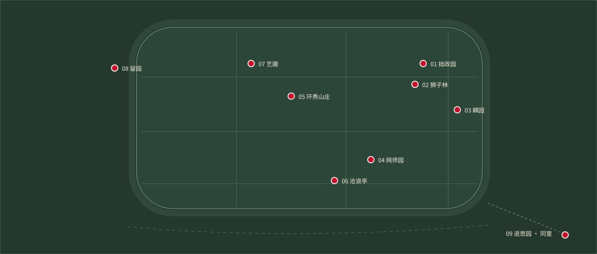
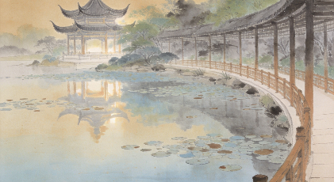
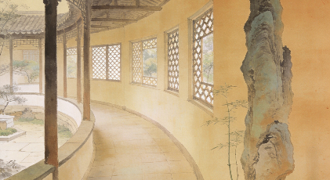
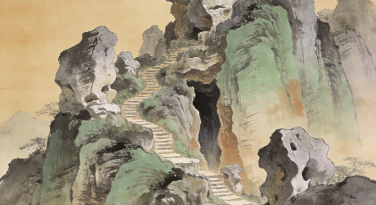
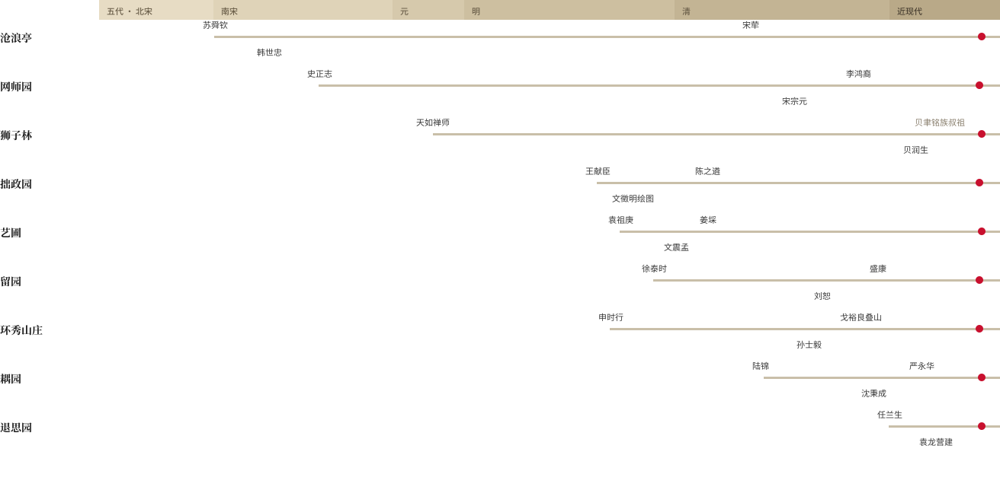
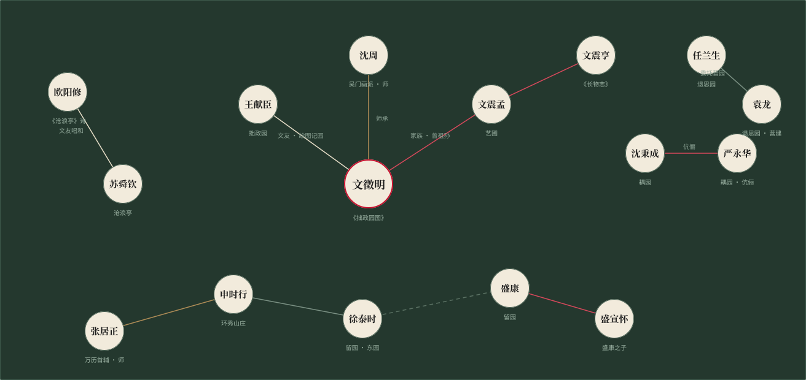

06 · 沧浪亭
姑苏区沧浪亭街 3 号 ｜ 2000 年扩展
八座园林散布姑苏古城内外，退思园独踞南郊同里镇——水是它们共同的路。

以始建年代为序。每一座园林，都是一部家族与时代的合传。
姑苏区沧浪亭街 3 号 ｜ 2000 年扩展
姑苏区阔家头巷 11 号 ｜ 1997 年首批
姑苏区园林路 23 号 ｜ 2000 年扩展

姑苏区东北街 178 号 ｜ 1997 年首批
姑苏区文衙弄 5 号 ｜ 2000 年扩展

姑苏区留园路 338 号 ｜ 1997 年首批

姑苏区景德路 272 号 ｜ 1997 年首批
姑苏区小新桥巷 6 号 ｜ 2000 年扩展
吴江区同里镇新填街 234 号 ｜ 2000 年扩展
自北宋庆历四年（1044）至清光绪十一年（1885），九园相继落成；人名标注其在位年代，红点为列入世界遗产之年。

虽由人作，宛自天开
—— 明 · 计成《园冶》
以文徵明为枢纽的吴门文脉，与门生故吏、盛氏父子的宦绅网络——园主之间的师承、家族与交游，取自 CBDB 中国历代人物传记资料库及公开史料互校。

摘录自维基百科「苏州古典园林」及各园词条，与地方志互校。完整词条经站内镜像每日同步。
 拙政园
拙政园
拙政园始建于明正德初年，御史王献臣仕途失意归隐苏州后筑园，取西晋潘岳《闲居赋》「拙者之为政」意命名。全园以水为中心，分东、中、西三部分，中部为全园精华，是苏州现存最大的古典园林，亦被列入中国四大名园。
查看词条 · zh.wikipedia.org/wiki/拙政园沧浪亭是苏州现存诸园中历史最悠久的园林。北宋庆历四年，苏舜钦贬居苏州，以四万钱购得五代孙承祐池馆旧址，傍水筑亭，取《孟子》「沧浪之水清兮，可以濯吾缨」命名。园以崇阜广水见长，未入园门先见水，复廊将园内外山水连为一体。
查看词条 · zh.wikipedia.org/wiki/沧浪亭 网师园
网师园
网师园地处苏州旧城东南隅，始为南宋史正志「万卷堂」故址，清乾隆年间宋宗元购得重建，借「渔隐」之义名网师。全园占地仅约半公顷，布局紧凑，以精巧见长，被誉为苏州园林之「小园极则」。一九八〇年，以其殿春簃为蓝本的「明轩」落户纽约大都会艺术博物馆。
查看词条 · zh.wikipedia.org/wiki/网师园 留园
留园
留园始建于明万历二十一年，为太仆寺少卿徐泰时之东园，清嘉庆年间刘恕改建，俗称「刘园」，同治十二年盛康购得，取「刘」之谐音而易名「留园」。全园分中、东、西、北四个景区，以七百余米长廊串联，东区冠云峰为江南园林中最高大的湖石名峰。
查看词条 · zh.wikipedia.org/wiki/留园检索增强生成（RAG）引擎，已蒸馏《园冶》《长物志》《闲情偶寄》《江南园林志》等 63 种园林典籍。输入关键词或自然语言提示词，返回带典籍出处的专业回答。
「借景」一说，首见于计成《园冶·借景》篇：「构园无格，借景有因……因借无由，触情俱是。」拙政园中部远借北寺塔影，为「远借」之经典；西部波形水廊临墙而建，时借墙外市井声色，属「邻借」。《江南园林志》评其「扩先日之规模，极登临之胜概」。